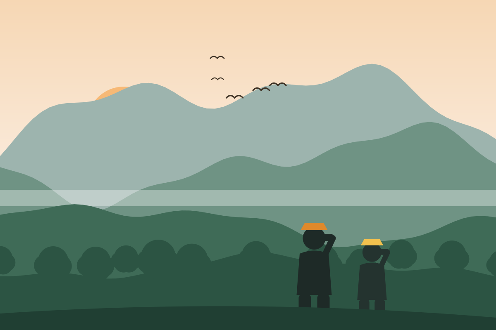

Contacto
Escríbenos si tienes dudas sobre una salida, quieres organizar una para tu grupo o necesitas ayuda con la inscripción.
Escríbenos
| Día | Correo | |
|---|---|---|
| Lunes a viernes | 8:00 a. m. a 6:00 p. m. | Respuesta en el mismo día |
| Sábados | 7:00 a. m. a 12:00 m. | Respuesta el lunes |
| Domingos y festivos | Solo para salidas del día | Respuesta el siguiente día hábil |
Antes de escribirnos
- Ten a mano el nombre de la salida que te interesa.
- Si ya te inscribiste, incluye tu número de inscripción.
- Cuéntanos si en el grupo hay menores de edad o personas con movilidad reducida.

También podemos ayudarte con
- Salidas privadas para grupos, colegios o empresas.
- Recomendaciones para comprar tus primeros binoculares.
- Cómo registrar tus observaciones en eBird.
Preguntas frecuentes
¿Necesito experiencia o equipo propio?
No. Las salidas de nivel principiante están pensadas para quienes nunca han observado aves, y prestamos binoculares sin costo. Solo para la ruta avanzada recomendamos llevar los tuyos.
¿Qué pasa si llueve el día de la salida?
Una llovizna no detiene la salida: muchas aves siguen activas. Si se pronostica lluvia fuerte, te avisamos el día anterior y puedes reprogramar o recibir la devolución completa.
¿Pueden participar niños?
Sí, desde los 8 años y acompañados por un adulto. Recomendamos el Jardín de colibríes o el Humedal al amanecer porque son recorridos cortos y planos.
¿Cómo se paga la salida?
Después de inscribirte, escríbenos por WhatsApp con tu número de inscripción. Te enviaremos los datos para hacer una transferencia en las 48 horas siguientes.
¿Qué es el «mal de altura» y me puede afectar en el páramo?
Es el malestar que algunas personas sienten al subir a gran altitud, con síntomas como dolor de cabeza o cansancio. Bogotá ya está a unos 2.600 metros, por lo que la mayoría de los participantes se adapta bien. Camina despacio, toma agua y avisa al guía si te sientes mal.
¿Ruta Tángara es una empresa real?
No. Es un negocio ficticio creado para un proyecto universitario. Puedes conocer el proyecto y ver el video de su creación en la página Proyecto.